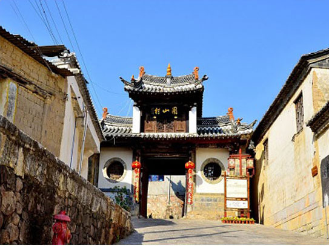
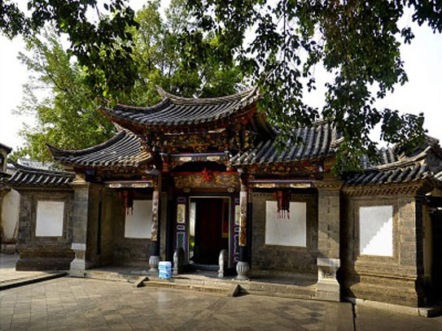
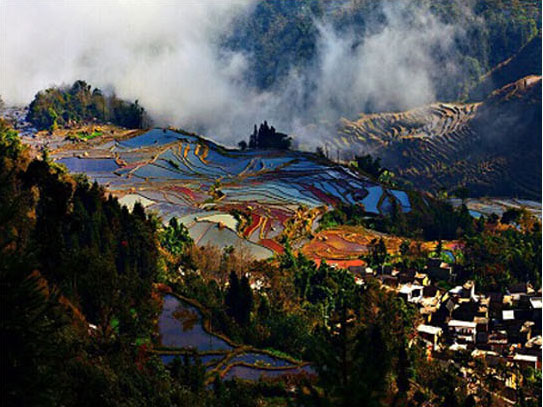
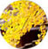

出游日与价格日历
>
春节 02/21- 行程特色
- 行程简介
- 预定须知
行程特色
- 美 景：汉族青砖四合大院--元阳梯田--东川红土地
- 团队用餐：全程中式午晚餐，五菜一汤
- 住宿安排：温馨的家
- 安心旅行：赠送最高保额30万境外救援保险，让您玩得开心
- 优秀团队：精选带团经验丰富，具备专业讲解知识的导游团队
行程简介
第一天 | 各地-昆明
餐食：晚餐住宿：昆明
各地飞往历史文化名城云南昆明(注意：请在航班起飞前90分钟到达飞机场)到达昆明后，可自行前往昆明的石林、九乡、滇池等特色景区游玩。18:00酒店大厅集合，由活动方安排分车及安排行前说明交流会。温馨提示：大交通可以委托老陈自驾机票客服小刘（13382069500）预定，也可以自行预定，订票请和领队确认名额。
第二天 | 昆明--建水
餐食：早餐、晚餐住宿：建水
酒店早餐后，前往由传统的汉族青砖四合大院、彝族土掌房和汉彝结合的瓦檐土掌房三类建筑风格结合的民居世界--团山居民，团山至今还保存着的完整古村落整体格局，有着滇南乡村特色风貌与传统社会人文环境的原生态特点，世所罕见，极为珍贵。到达建水县城之后，前往参观朱家花园，有一组规模宏大的清代居民建筑，有“滇南大观园”之誉！房间内的床，凳，桌，椅均采用紫木雕刻，体现清代风格，门僮及导游小姐的服饰和接待客人的清式礼仪，让人有恍惚置身百年前历史生活的感受。
 第三天 | 建水--元阳
餐食：早餐、晚餐住宿：元阳
酒店早餐后，前往中国最美的元阳梯田。元阳哈尼梯田主要有三大核心区组--【坝达景区】、【老虎嘴景区】、【多依树景区】，去老虎嘴俯瞰梯田是很好的选择，6000多亩梯田分布于深谷，像一朵巨大的花蕊，老虎嘴被美国摄影家称为世界上最壮丽的田园风光；晚上看夕阳，则应该选择坝达景区，在龙树坝拍日落也是不错的选择；感受大自然的鬼斧神功，19万亩映着蓝天的哈尼梯田就在你的脚下，哈尼梯田有一千多年的历史，至今科学家仍无法解答，这样大的面积，在这崇山峻岭中是怎样挖掘的。
订单须知
- 【活动费用】 4580元/人
- 【VIP会员价】 4500元/人
- 【儿童费用】 2500元/人 (1.1米-1.4米占床)
- 【费用包含】
- 1、交通：起亚狮跑或现代IX35(4人1车，1000元/人，如不足4人1车，需补车费)
- 2、通讯：通讯设备，车标，<车队出行的后勤服务>组织费用
- 3、用餐：6早6晚，（晚餐60元/人）
- 4、住宿：建水住五星标准；昆阳，元阳，玉溪住四星标准；东川红土地住三星标准
- 5、保险：太平洋旅游意外险
- 6、领队：优秀领队及当地导游服务
- 7、景点：建水朱家花园，团山居民，元阳梯田，红河纳诺梯田，东川红土地。
- 【费用不含】
- 1、各地往返昆明机票自理
- 2、全程中餐自理，不占床位早餐请自理
- 3、车辆的油费，路桥费，停车费用
- 4、全程用餐过程中客人所点酒水费用
- 5、酒店电话费，洗衣费，购物等个人消费
- 【活动时间】
- 2015年12月27日-2016年1月2日
- 【租车说明】
- 1、本行程车辆是由组织方向当地租车公司代租；租车费用由组织方承担。基本车型：起亚狮跑；车型升级需增加车费。
- 2、租车流程：
- a.拿车手续
- 驾车人需带齐身份证、驾驶证和信用卡一张，凭上述证件办理租用手续；信用卡额度不得低于10000元人民币，租车的时候需刷8000元的预授权(神州租车规定)。
- b.归还所租车辆，办理还车手续后，即解除8000元预授权。
- c.交通违章的处罚，还车时需要刷2000元的违章预授权；作为交通违章押金，在还车之后一个月内无违章的情况下自动解除冻结；如有违章，驾车人自行处理违章并通知租车公司后，则解除2000元的预授权；或者请租车公司代为办理违章，费用从2000元预授权中扣除，剩余的部分则解除预授权
- d.行车所产生的油费路桥费包括停车费均由车上人均摊，另有约定的除外。
- 【注意事项】
- 1、提前做好汽车检查和保养。提前准备好随车工具、备胎、润滑油等，检查户外装备是否齐全。遇旅途中出现意外事故，承办方有义务和责任为客人协助解决相关问题，但不负事故责任和经济赔偿，如产生赔偿将按保险公司规定赔偿。如遇人力不可抗拒因素所产生的费用由客人自理，如塌方、自然灾害等
- 2、游客必须身体健康，游程中应遵守纪律，发扬团结互助的精神，必须听从领队的劝说不可擅自行动，否则后果自负。
- 3、请自备好相机、胶卷、防晒霜，爱好摄影的注意照看相关器材。
- 4、自驾车请保持在高速公路上的车距，行驶中望车主自觉遵守相关交通规则，不随意超车，严禁在弯道处停车、听从领队安排协调。
- 5、长时间在户外活动，请戴上太阳镜，涂抹防晒霜以护肤；爱护环境，安全第一，全部垃圾带出景区。
领队介绍
中国自驾游联盟南京站>
自2005年开始，南京首家专业自驾旅游公司--“中国自驾游联盟”，本着以城市为中心，......
用户评价
- 综合评价：
- 15人出游
- 2条评论
- E29****329
- 综合评价：
- 2015-12-21
- 18号就结束行程了，现在才来评价，总的来说还是不错的。
- 行程安排：满意
- 住宿餐食：满意
- 旅行交通：满意

- E29****329
- 综合评价：
- 2015-12-21
总体评论给90分！双十一活动的时候定的，价格很便宜，还担心会不会住宿太偏僻。结果还好，第一天在水原这个地方，房间是公寓。周围很多小商店和酒吧，可以不用非要在第一天行程的汗蒸那里吃饭，这点给大家点建议，后三晚在加阳的怀旧酒店
- 行程安排：行程安排总体满意，第二天的购物关键的重点在于华克山庄，只有60分钟，那里虽然小，折扣真的便宜。
- 住宿餐食：交通基本我们是早晨地铁出，晚上打车回。首尔打车还可以吧，不太赌。
- 旅行交通：交通基本我们是早晨地铁出，晚上打车回。首尔打车还可以吧，不太赌。
爱自驾客服的回复：
尊敬的爱自驾会员，给您立减400这个订单之后，此特惠房型实际您成功预定的此客栈只收了您75元/晚，您可以仔细的对比下的，感谢您对爱自驾网的关注与支持，欢迎下次预订4007-999-999，谢谢！祝您愉快！